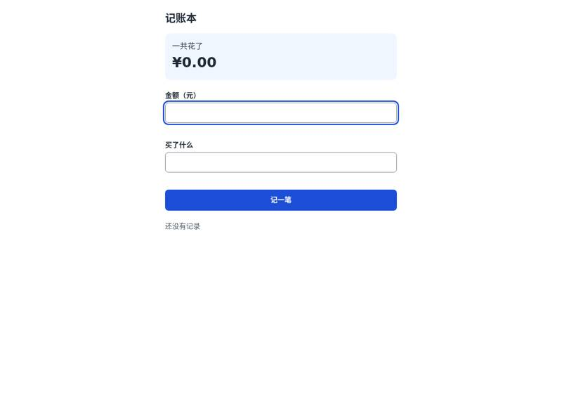
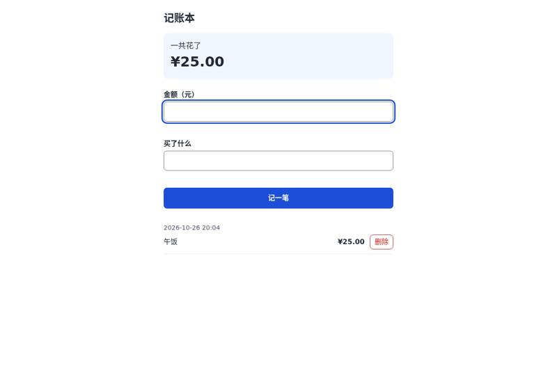
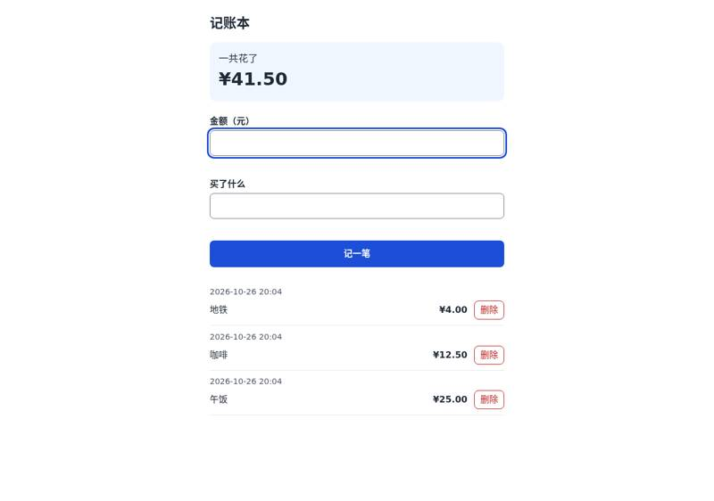
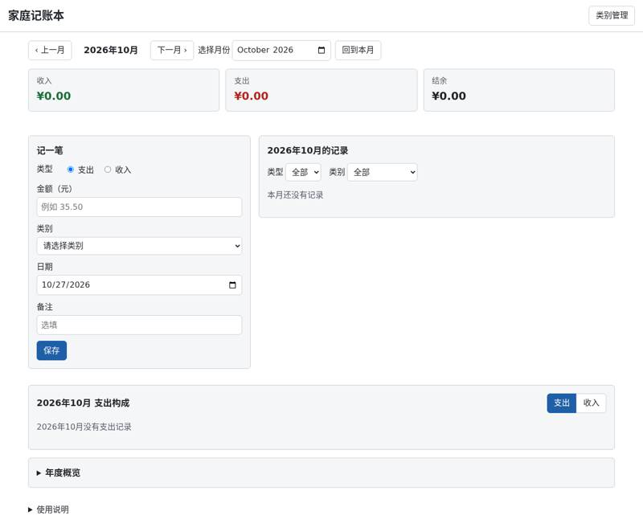
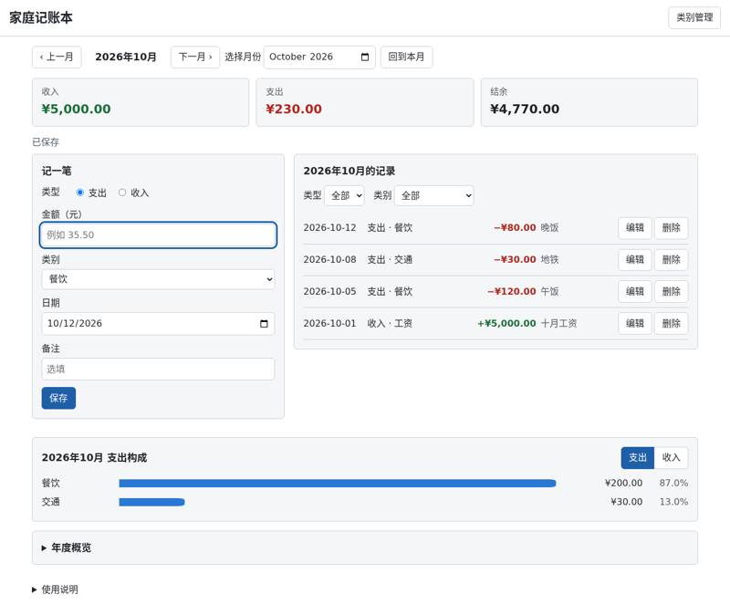
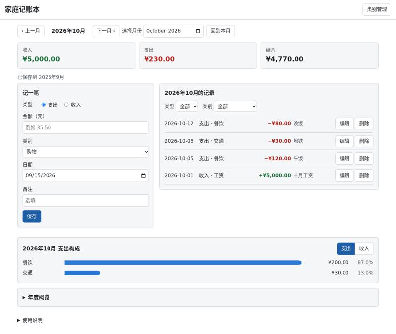

nurettincoban/ai-prd-workflow: vibe coding test
Installed from its README in a throwaway sandbox, then used by Claude Code (Claude Opus 5.5) to build two apps from requests written the way someone who cannot code would write them. Whenever the build stopped to ask a question or for approval, it got the same reply. A separate tester session, with no tool loaded, opened each app in a browser and ran the checks; we went through every screenshot. All results · The task · The tester's checks
Install: SETUP: done Claude Code plugin prd-workflow@ai-prd-workflow v3.0.0 (user scope) via `claude plugin marketplace add ~/src` and `claude plugin install prd-workflow@ai-prd-workflow` (repo commit b67f4d3e1161)
One sentence: an expense page
The request, word for word: 帮我做一个记账小网页：每次花钱记一笔（花了多少、买了什么），页面上能看到一共花了多少，关掉浏览器再打开，记录还在。
Ran: all 4 checks passed. Opens: double-click. Built in 30.0 minutes (limit 30); it stopped to ask 4 time(s); how it ended: out of time. Usage at API prices: $5.58 (32.8 times the run with no tool). Packages: none (plain HTML, CSS and JavaScript).
Our note: Stopped four times: its interview, a plan to approve, a question whether to move from localStorage to IndexedDB after its own browser tests saw records go missing, and a second plan. Still working at the 30-minute limit; the page by then passed every check.
| Check | Verdict | What the tester saw | Screenshot |
|---|---|---|---|
| opens | pass | file:// page shows: '记账本\n\n一共花了\n¥0.00\n\n金额（元）\n\n买了什么\n\n记一笔\n\n还没有记录' |  |
| records an expense | pass | after adding 25/午饭 page shows: '记账本\n\n一共花了\n¥25.00\n\n金额（元）\n\n买了什么\n\n记一笔\n2026-10-26 20:04\n午饭\n¥25.00\n删除' |  |
| total is right | pass | total shown: ¥41.50; page: '记账本\n\n一共花了\n¥41.50\n\n金额（元）\n\n买了什么\n\n记一笔\n2026-10-26 20:04\n地铁\n¥4.00\n删除\n2026-10-26 20:04\n咖啡\n¥12.50\n删除\n2026-10-26 20:04\n午饭\n¥25.00\n删除' |  |
| still there after closing and reopening | pass | after reopen total: ¥41.50; page: '记账本\n\n一共花了\n¥41.50\n\n金额（元）\n\n买了什么\n\n记一笔\n2026-10-26 20:04\n地铁\n¥4.00\n删除\n2026-10-26 20:04\n咖啡\n¥12.50\n删除\n2026-10-26 20:04\n午饭\n¥25.00\n删除' |  |


Where it stopped, and got the reply 「我不懂这些，你按你推荐的来，继续做。」
你好！我是负责这个项目的产品经理。动手做之前，我会分几轮问你一些问题，把需求写成一份产品需求文档（PRD.md），后面所有步骤都按这份文档来做。 你的想法是：一个记账小网页，每花一笔钱记一条（金额、买了什么），页面显示总共花了多少，关掉浏览器再打开，记录还在。 **第一轮问题（关于用途和基本需求）：** 1. **谁在用？** 只有你自己在自己的电脑上用，还是要在多台设备（比如手机和电脑）之间同步，或者和别人（比如家人）一起用？ 2. **你以前有没有用过类似的东西？** 比如一个半成品网页、Excel 表格或者别的 App。如果有，告诉我在哪里（文件路径），我会先看一下。 3. **记一笔需要哪些信息？** 只要"金额 + 买了什么"就够了吗？要不要自动记下日期，或者加上分类（吃饭、交通等）？ 4. **记错了怎么办？** 是否需要删除或修改已经记下的条目？ 5. **"一共花了多少"怎么算？** 是从第一笔开始的全部总和就行，还是也想看"本月/今天花了多少"？货币是人民币（¥）吗？ 请按你自己的想法回答，不确定的直接说"不确定"或"你决定"就行。
`: the bookkeeping page itself. It is a single file with no internet connection needed, and you open it by double-clicking. - `package.json` and `tests/helpers.js`, `tests/rfc-001.test.js`: automatic tests that open the page in a real browser and check it. You won't need to use these. - `.gitignore`: tells git to ignore the test tool's downloaded files. **Build order:** 1. The page layout: title, total, the two input boxes, the "记一笔" button and the list. 2. Checking the input: what counts as a valid amount (full-width digits like "２５" are accepted, the "¥" sign is ignored) and the Chinese error messages. 3. Saving: records go into the browser's local storage. Amounts are stored as whole numbers of fen, so totals never have rounding errors. If the saved data is damaged it is never overwritten, and if saving isn't allowed a yellow warning appears. 4. The 16 automatic tests (T1.1 to T1.16), plus a test run and a check of every acceptance criterion. **Technical choices:** - No framework and no build step, so the delivered file is exactly what runs. - The page doesn't expose any extra test hooks; the tests only interact with it the way a user would. - Risk: the test tool might not work with this computer's browser version. If that happens I'll stop and tell you rather than quietly switching to another tool. **Effect on existing work:** none (the project has no code yet). Do you approve this plan? Reply "同意" (approve) and I'll start building, or tell me what you'd like changed.
storage (localStorage). Tested in this computer's Chrome-type browser with the page opened by double-click, that storage is unreliable: - On some openings the page sees an empty list, even though the records still exist. - Anything you add during one of those visits is lost. In 55 test openings, 3 entries disappeared for good. That breaks your main requirement that records are still there after you close and reopen the browser. **What I recommend:** switch to the browser's other built-in storage (IndexedDB). In the same 55 openings it showed every record every time and lost nothing. Nothing changes for you: still one file you double-click, no internet, no account. **What it costs:** - The plan documents need updating (the tool's /manage-changes step). - The saving part of the page is rewritten. - The tests change. - How two open tabs stay in sync changes too, but you won't notice a difference. **What's done so far:** the page itself (layout, input, Chinese error messages, list, total). 14 of 16 automatic tests pass. The two that fail intermittently are the ones caused by this storage problem. I also found and fixed a small mistake in the plan's expected amount for one test. The tool's rules say a change like this needs your approval. **Shall I switch to IndexedDB?** Reply "同意" (approve) and I'll update the documents and continue. If you'd rather keep localStorage, the page will still work, but I would not consider it finished, because records can occasionally go missing.
page is open in two browser windows, a record added or deleted in one shows up in the other within about a second, and neither window overwrites the other. 3. **Speed check:** with 10,000 records saved, the page should still open within 1 second, and adding or deleting should take less than 0.2 seconds. **Files it changes:** - `output/index.html` gets the delete button, the cross-tab sync and the faster list redraw. - `tests/rfc-002.test.js` is new, with automatic tests T2.1 to T2.10. **Build order:** delete, then tab sync, then the speed tests, then a full test run (including all the earlier tests). **Technical choices:** - Tabs notify each other with the browser's built-in BroadcastChannel; I checked that it works between `file://` pages. As a backup, a tab also reloads the data when you switch back to it. - After a delete, the keyboard focus moves to the next record, so you can keep working without the mouse. **I'd also fix three test gaps from the RFC-001 review.** The page itself works correctly; these only make the tests stricter: - test entries that are saved out of time order; - test data that becomes damaged while the page is open (the tab-sync feature relies on this); - make the focus-outline check actually check the blue outline. **Effect on the existing work:** the save/load code from part one is reused as it is, and all 18 earlier tests must still pass. Do you approve this plan? Reply "同意" (approve) and I'll build it, test it and deliver the finished page.
One paragraph: a family ledger
The request, word for word: 做一个家庭记账本网页：能记收入和支出（金额、类别、日期、备注），能按月看收入、支出和结余，能看每个类别花了多少（最好有图），可以设每月预算、超了要提醒，还能把记录导出成 Excel 表格。数据存在我电脑上就行。
6 of 8 checks passed. Opens: double-click. Built in 45.0 minutes (limit 45); it stopped to ask 2 time(s); how it ended: out of time. Usage at API prices: $10.56 (10.3 times the run with no tool). Packages: none (plain HTML, CSS and JavaScript).
Our note: Its interview, then a plan of seven RFCs to approve one by one. At the 45-minute limit the ledger did everything but the budget and the export; its own help text points to backup buttons that are not on the page.
| Check | Verdict | What the tester saw | Screenshot |
|---|---|---|---|
| opens | pass | file:// page title '家庭记账本', shows 收入/支出/结余 cards, 记一笔 form, 记录 list, 支出构成 |  |
| records income and expenses | pass | October record list: 2026-10-12 | 支出 · 餐饮 | −¥80.00 | 晚饭 | 2026-10-08 | 支出 · 交通 | −¥30.00 | 地铁 | 2026-10-05 | 支出 · 餐饮 | −¥120.00 | 午饭 | 2026-10-01 | 收入 · 工资 | +¥5000.00 | 十月工资 |  |
| month's income, spending and balance | pass | October 2026 cards: 收入 5000.0, 支出 230.0, 结余 4770.0 |  |
| spending by category | pass | 支出构成 section: 支出构成 | 支出 | 收入 | 餐饮 | ¥200.00 | 87.0% | 交通 | ¥30.00 | 13.0% | |
| switches between months | pass | September: cards (0.0, 999.0, -999.0), list: 2026-09-15 | 支出 · 购物 | −¥999.00 | 衣服; back to October: cards (5000.0, 230.0, 4770.0) |  |
| warns over budget | fail | The app has no budget feature at all: no monthly or per-category budget input anywhere on the page, in the 类别管理 dialog, or in 年度概览/使用说明 (no text containing 预算). So no budget could be set and no over-budget warning appears. October's spending is 230 with no warning. Visible controls: 类别管理, 上一月/下一月, 选择月份, 回到本月, the 记一笔 form (类型/金额/类别/日期/备注/保存), the 类型/类别 filters, 编辑/删除 per record, 支出/收入 toggle on 支出构成, 年度概览, 使用说明. |  |
| exports a spreadsheet | fail | There is no export button: nothing labelled 导出, Excel or 下载 on the page or in the 类别管理 dialog, so no file was downloaded. The 使用说明 section tells the user to click "备份数据" and "恢复数据", but neither button exists on the page. |  |
| still there after closing and reopening | pass | After closing all tabs and reopening: all 5 records still present (4 in October, 999 in September); October cards (5000.0, 230.0, 4770.0); October list: 2026-10-12 | 支出 · 餐饮 | −¥80.00 | 晚饭 | 2026-10-08 | 支出 · 交通 | −¥30.00 | 地铁 | 2026-10-05 | 支出 · 餐饮 | −¥120.00 | 午饭 | 2026-10-01 | 收入 · 工资 | +¥5000.00 | 十月工资; September list: 2026-09-15 | 支出 · 购物 | −¥999.00 | 衣服 |


Where it stopped, and got the reply 「我不懂这些，你按你推荐的来，继续做。」
你好！我是这次项目的产品经理。我用的这个工具（AI PRD Workflow）的第一步是先问你几个问题，把需求写成一份需求文档（PRD.md），之后才开始写代码。下面是第一批问题： **第一批：基本情况** 1. **谁会用？** 只有你一个人用，还是家里好几个人一起记？如果是几个人，要不要区分"这笔是谁记的/谁花的"？ 2. **在哪儿用？** 只在一台电脑的浏览器里打开就行，还是也想在手机上看或记？（你说"数据存在我电脑上就行"，我理解为不需要联网、不需要登录账号，对吗？） 3. **有没有现成的东西？** 你现在是用 Excel、某个记账 App 或纸本记账吗？如果有现成的表格或旧数据，需要导入进来吗？（如果有文件，告诉我放在哪里，我去看一下。） 4. **类别：** 你希望用一套预设好的类别（比如餐饮、交通、房租、工资……），还是自己添加、修改类别？两者都要也可以。 5. **预算：** "每月预算"是指整个月的总支出预算，还是每个类别分别设预算（比如餐饮每月 2000 元）？超了的时候，在页面上显示醒目的提醒就够了吗？ 用中文直接回答就行，不确定的可以说"你帮我定"。
ones), month arithmetic, and Excel's date numbers. - `src/core/store.js`: the data layout, the default categories (11 expense, 5 income), and full validity checks. - `src/core/storage.js`: the only code that touches browser storage. It handles "storage full", "storage blocked" and "data unreadable" without ever overwriting your saved data. - `src/index.template.html`, `src/styles.css`, `src/ui/app.js`: the basic Chinese page, the help section, the error banner, and the "下载原始数据" button for damaged data. - `tests/unit/*.test.js` (money, dates, store, storage, build): tests T1.1–T1.14 from the test plan. - `tests/e2e/helpers.js`, `tests/e2e/shell.e2e.js`: open the real `output/index.html` by `file://` in Chromium and check that it makes no network requests (T1.15–T1.16). **Order:** money and dates → store → storage → build script → page shell → unit tests → browser tests → build and run everything. **Trade-offs:** - Plain scripts instead of modern JavaScript modules. Browsers block modules when a page is opened by double-click, and plain scripts still run under the test tools. - If saving fails, your input stays on the page (it is not thrown away) and a warning appears. **Effect on existing work:** none. There is no code yet. --- Reply **同意** (approve) and I'll start RFC-001. The tool asks for approval again before each of the next 6 RFCs. If you'd rather not be asked each time, reply **全部同意** (approve all) and I'll build them in order, presenting each plan without waiting.